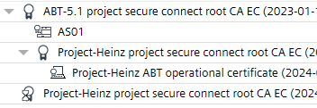
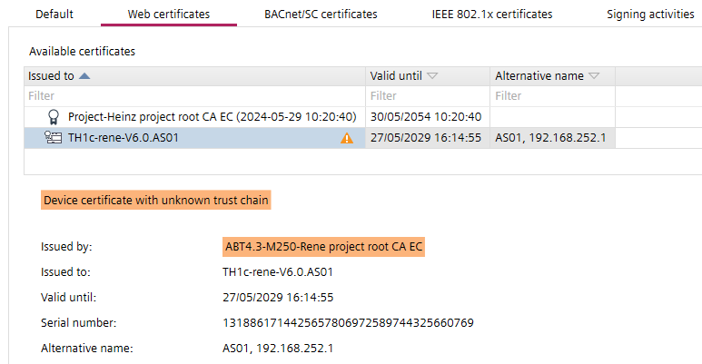
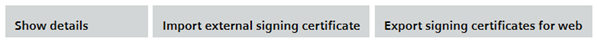
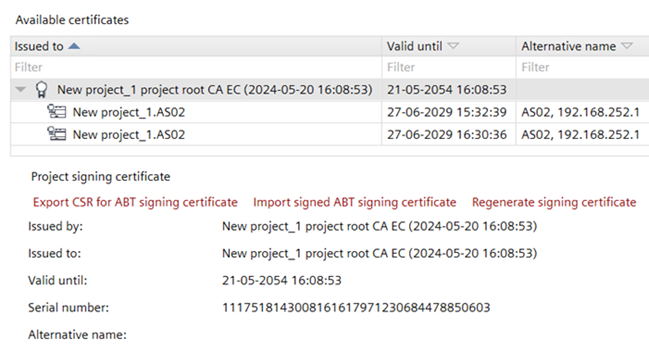
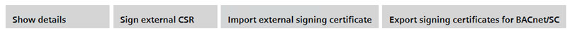
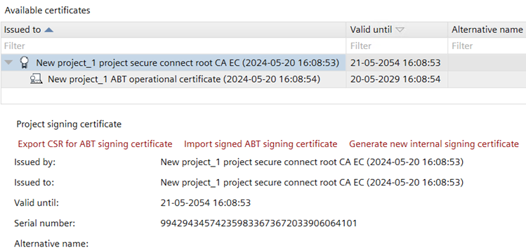
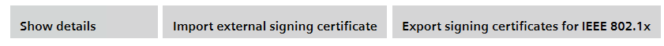
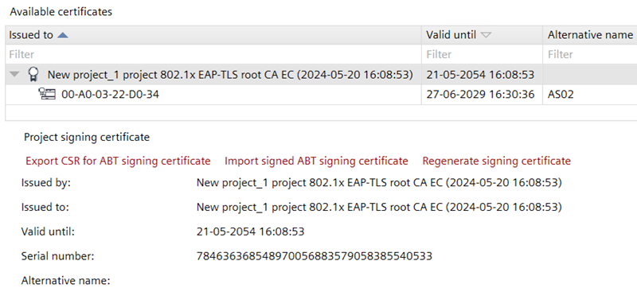
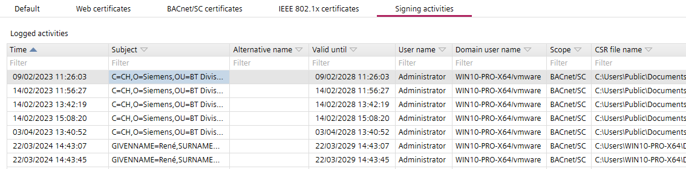

证书
这Certificates任务允许您管理根证书。
1 | 任务选择器 | 2 | 默认 |
3 | 网络证书 | 4 | BACnet/SC certificates |
5 | IEEE 802.1X 证书 | 6 | 签名活动 |
图标 | 描述 |
|---|---|
Project root certificate. | |
ABT 站点充当证书颁发机构。 | |
| 具有有效根证书的设备。 |
| 显示根证书更新过程中的临时证书。额外的
|
 | 显示外部 CA 与 ABT 站点根证书的分层使用。
|
| 显示带有未知信任链消息的设备证书。突出显示了该问题的其他信息。  |


① Task selector
任务 | 描述 |
|---|---|
信息 | |
地址默认值 | |
设备默认值 | |
用户资料 | |
命名默认值 | |
本土化 | |
I/O 作业模板 | |
数字范围 | |
证书 |
② Default
任务 | 描述 |
|---|---|
证书颁发者 | Organization name: 指定将颁发证书的组织的名称。 Organization department: 指定颁发证书的组织部门的名称。 Location: 指定组织的位置。 State: 指定组织的状态。 Country: 指定组织所在的国家/地区。 Email address: 指定组织的电子邮件地址。 |
Certificate type:无、内部或外部证书。 Certificate validity:指定证书的有效期（以月为单位）。默认值为 60 个月。 Expiration warning period:设置到期与控制器向用户发出通知之间的时间（以天为单位）。默认值为 90 天。 Note:仅从设备版本 V1.6 开始支持 IEEE802.1X 证书（在“详细信息”窗格中检查设备版本> System文件夹> Device version). | |
网络服务器证书 | |
BACnet/SC certificates | |
IEEE 802.1X 证书 |
③ Web certificates
Web 证书显示以下证书类型：
- ABT Site main signed certificate
- Intermediate signed certificate
- Device certificate

工具栏 | 描述 |
|---|---|
显示详情 | 打开Certificate来自 Windows 的对话框。 |
导入外部签名证书 | 进口3rd将根证书添加到项目中。 |
导出 Web 签名证书 | 导出 ABT 站点根证书（证书颁发机构的证书），以便将根证书安装到客户端（例如 Web 浏览器）。 |

详情查看 | 描述 |
|---|---|
Actions | |
导出 CSR 以获得 ABT 签名证书 | 为外部中间签名请求创建根证书。该文件必须发送给值得信赖的机构，即颁发数字证书的认证机构。 |
导入已签名的 ABT 签名证书 | 从外部受信任的证书颁发机构导入外部中间签名的根证书。 |
重新生成签名证书 | 您可以重新生成内部根证书。重新生成的根证书的设备证书也需要重新生成。因此，必须针对每个设备进行下载。 仅以管理员权限启用。 |
删除导入的签名证书 | 删除选定的根证书。 |
Information | |
由...发出 | 签署证书的证书颁发机构的名称。 |
Issued to | 接收证书的实体。 |
有效期至 | 证书的到期日期。 |
序列号 | 包含用于识别设备的信息，例如序列号。 |
替代名称 | 主题的替代名称。 |
④ BACnet/SC certificates
BACnet/SC 证书显示以下证书类型：
- ABT Site main signed certificate
- Intermediate signed certificate
- Temporary signing certificate
- Device certificate
- ABT Site operational certificate

工具栏 | 描述 |
|---|---|
显示详情 | 打开Certificate来自 Windows 的对话框。 |
签署外部 CSR | 使用此按钮对 3 中的 CSRs 进行签名rd派对设备。 |
导入外部签名证书 | 进口3rd将根证书添加到项目中。 |
导出 BACnet/SC 的签名证书 | 导出 ABT 站点根证书（证书颁发机构的证书），以便将根证书安装到客户端。 |

详情查看 | 描述 |
|---|---|
Actions | |
导出 CSR 以获得 ABT 签名证书 | 为外部中间签名请求创建根证书。该文件必须发送给值得信赖的机构，即颁发数字证书的认证机构。 |
导入已签名的 ABT 签名证书 | 从外部受信任的证书颁发机构导入外部中间签名的根证书。 |
生成新的内部签名证书 | 您可以重新生成内部根证书。重新生成的根证书的设备证书也需要重新生成。因此，必须进行下载。 仅以管理员权限启用。 |
导出 CSR 以获得 ABT 操作证书 | 导出操作证书的签名请求。这将从项目数据中删除现有的操作证书密钥并使之前的签名请求无效。Note：此操作无法撤消，只要导入新的签名请求，ABT 站点就不再是可信设备。 |
导入签署的 ABT 操作证书 | 从外部受信任的证书颁发机构导入外部签名的根证书。 |
删除临时根目录 | 删除临时根证书。如果所有设备均已更新为新版本Main signed certificate, theTemporary signing certificate可以删除。删除后会出现新的ABT operational certificate是同时创建的。如果之前使用过外部认证机构，则必须重复此过程。 |
删除导入的签名证书 | 删除选定的根证书。 |
Information | |
由...发出 | 签署证书的证书颁发机构的名称。 |
Issued to | 接收证书的实体。 |
有效期至 | 证书的到期日期。 |
序列号 | 包含用于识别设备的信息，例如序列号。 |
替代名称 | 主题的替代名称。 |
⑤ IEEE 802.1X certificates
IEEE 802.1X 证书显示以下证书类型：
- ABT Site main signed certificate
- Intermediate signed certificate
- Device certificate

工具栏 | 描述 |
|---|---|
显示详情 | 打开Certificate来自 Windows 的对话框。 |
导入外部签名证书 | 进口3rd将根证书添加到项目中。 |
导出 IEEE 802.1X 的签名证书 | 导出 ABT 站点根证书（证书颁发机构的证书），以便将根证书安装到客户端。 |

详情查看 | 描述 |
|---|---|
Actions | |
重新生成签名证书 | 您可以重新生成内部根证书。重新生成的根证书的设备证书也需要重新生成。因此，必须进行下载。 |
导出 CSR 以获得 ABT 签名证书 | 为外部中间签名请求创建根证书。该文件必须发送给值得信赖的机构，即颁发数字证书的认证机构。 |
导入已签名的 ABT 签名证书 | 从外部受信任的证书颁发机构导入外部中间签名的根证书。 |
导出 CSR 以获得 ABT 操作证书 |
|
删除导入的签名证书 | 删除选定的根证书。 |
Information | |
由...发出 | 签署证书的证书颁发机构的名称。 |
Issued to | 接收证书的实体。 |
有效期至 | 证书的到期日期。 |
序列号 | 包含用于识别设备的信息，例如序列号。 |
替代名称 | 主题的替代名称。 |
⑥ Signing activities

柱子 | 描述 |
|---|---|
时间 | 活动的时间戳。 |
主题 | 活动的主题。包含用于识别设备的信息，例如序列号。 |
替代名称 | 主题的替代名称。 |
有效期至 | 证书的到期日期。 |
用户名 | 执行签名活动的用户的名称。 |
域用户名 | 域用户名。 |
范围 | 签约活动范围。 |
CSR file name | CSR 文件的名称。 |